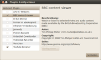

Plugins
Dieser Artikel wurde für die folgenden Ubuntu-Versionen getestet:
Ubuntu 16.04 Xenial Xerus
Zum Verständnis dieses Artikels sind folgende Seiten hilfreich:
Der Medienspieler Totem (aka "Videos") lässt sich durch verschiedene Plugins erweitern. Diese werden im Folgenden vorgestellt.
Plugin-Pakete von den Totem-Entwicklern¶
totem-plugins¶
Das Paket totem-plugins erweitert Totem um einige Funktionen. Das Paket sollte bei einer normalen Installation von totem automatisch mit installiert werden. Sollte das Paket fehlen, lässt es sich leicht aus den Quellen nach installieren [1]:
totem-plugins (main)
vcdimager (universe - wird für den "Videodisk-Rekorder"-Plugin benötigt)
 mit apturl
mit apturl
Paketliste zum Kopieren:
sudo apt-get install totem-plugins vcdimager
sudo aptitude install totem-plugins vcdimager
Nach der Installation lassen sich folgende Plugins unter "Bearbeiten -> Plugins..." aktivieren:
| Plugins | ||
| Erweiterung | Beschreibung | Bedienung |
| "MPRIS D-Bus-Schnittstelle" | Das Plugin stellt die Totem-API via D-Bus anderen Programmen (z.B. Chatprogrammen) bereit. | |
| "Immer im Vordergrund" | Das Hauptfenster wird immer im Vordergrund gehalten, wenn ein Video abgespielt wird. | |
| "Infrarot-Fernbedienung" | Unterstützung für Infrarot-Fernbedienungen (s. Lirc). (Hinweis: Es muss eine Datei .lircrc im Homeverzeichnis existieren, sonst bricht das Plugin mit einer Fehlermeldung ab.) | |
| "Drehungs-Plugin" | Ermöglicht das Drehen von Videos, falls diese in falscher Orientierung vorliegen | |
| "Python-Konsole" | Stellt eine interaktive Python-Konsole zur Verfügung, mit der Totem als totem_object manipuliert werden kann. | "Python -> Python-Konsole" |
| "Untertitel-Downloader" | Lädt automatisch zum Video passende Untertitel von opensubtitles.org  herunter. herunter. | "Ansicht -> Untertitel -> Film-Untertitel herunterladen" |
| "Videodisk-Rekorder" | Verknüpft Totem mit Brasero, um so das Erstellen von (S)VCDs oder DVDs zu vereinfachen. | "Film -> Video-CD/DVD erstellen..." 1 |
| "Vorschau" | Totem verwendet das Vorschaubild des wiedergegebenen Films als Fenstersymbol. | |
| "Sofortnachrichten-Status" | Setzt den Sofortnachrichten-Status auf "Abwesend", wenn ein Video abgespielt wird | |
| "Zeitgeist" | Benutzung von Zeitgeist | |
|  |
| Einstellungen |
1 Wird nur angezeigt, während ein Video abgespielt wird
Darüber hinaus stellt das Plugin ein paar weitere Funktionen zur Verfügung, die nicht unter "Bearbeiten -> Plugins..." aufgeführt werden:
Totem mit Multimedia-Tasten einer entsprechenden Tastatur kontrollieren
Anzeigen der Eigenschaften eines Videos ("Seitenleiste -> Eigenschaften")
Deaktivieren des Bildschirmschoners, während ein Video abgespielt wird
bis zu einem zu definierenden Zeitpunkt im Video vorspringen ("Gehe zu -> Springen zu..." bzw. Strg + K )
totem-plugins-extra¶
Das Paket totem-plugins-extra stellt eine weitere Sammlung von Plugins zur Verfügung. Zuerst muss es installiert [1] werden:
totem-plugins-extra (universe)
mit apturl
Paketliste zum Kopieren:
sudo apt-get install totem-plugins-extra
sudo aptitude install totem-plugins-extra
Nach der Installation lässt sich das folgende Plugins unter "Bearbeiten -> Plugins..." aktivieren:
| Plugins | ||
| Erweiterung | Beschreibung | Bedienung |
| "Gromit-Anmerkungen" | Ermöglicht das Zeichnen auf Video- oder Standbildern. Mehr Informationen zur Verwendung finden sich im Artikel Gromit. | |

Arte+7¶
Der deutsch-französische Fernsehsender Arte stellt in seiner Mediathek Arte+7 viele gesendete Videos für sieben Tage online. Mit dem grilo-arte-plugin kann auf die Videos direkt in Totem zugegriffen werden
Installation¶
Das Paket ist nicht in den offiziellen Quellen vorhanden. Es gibt es die Möglichkeit, das PPA der Entwickler einzubinden:
Adresszeile zum Hinzufügen des PPAs:
ppa:malizor/ppa
Hinweis!
Zusätzliche Fremdquellen können das System gefährden.
Ein PPA unterstützt nicht zwangsläufig alle Ubuntu-Versionen. Weitere Informationen sind der  PPA-Beschreibung des Eigentümers/Teams malizor zu entnehmen.
PPA-Beschreibung des Eigentümers/Teams malizor zu entnehmen.
Damit Pakete aus dem PPA genutzt werden können, müssen die Paketquellen neu eingelesen werden.
Nun lässt sich das Programm installieren [1]:
grilo-plugin-arte (PPA (ab 16.04))
mit apturl
Paketliste zum Kopieren:
sudo apt-get install grilo-plugin-arte
sudo aptitude install grilo-plugin-arte
Nach der Installation findet sich das Plugin im Hauptfenster unter "Kanäle" mit dem Titel "Arte+7". Nach Anklicken des Icons ( ) lässt sich die Sprache auswählen, daraufhin die gewünschte Qualität. Dann werden die verfügbaren Videos angezeigt und können per Mausklick abgespielt werden.
) lässt sich die Sprache auswählen, daraufhin die gewünschte Qualität. Dann werden die verfügbaren Videos angezeigt und können per Mausklick abgespielt werden.
- Erstellt mit Inyoka
-
 2004 – 2017 ubuntuusers.de • Einige Rechte vorbehalten
2004 – 2017 ubuntuusers.de • Einige Rechte vorbehalten
Lizenz • Kontakt • Datenschutz • Impressum • Serverstatus -
Serverhousing gespendet von